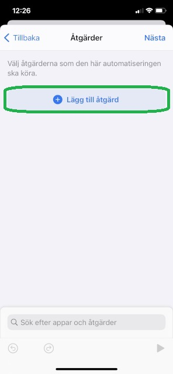
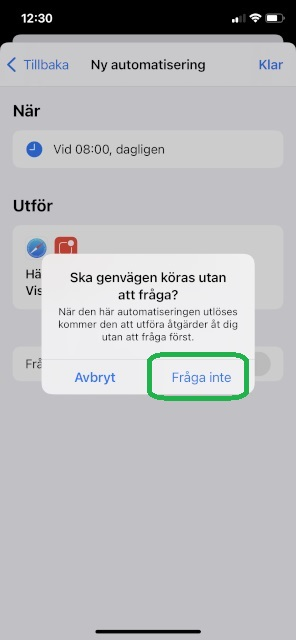

Dokumentation över hur du kan lägga till en automatisk namnsdagsnotis på din iPhone med denna sidan.
Detta är hur en notis i slutändan kommer att se ut då den kommer med automatik varje dag vid en bestämd tid.
1. Starta appen "Genvägar"
(kan behöva laddas ned ifrån App Store)
2. Tryck på "Automatisering" längst ned
3. Tryck på "+" uppe till höger
4. Tryck på "Personlig automatisering"
5. Tryck på "Tid på dagen"
6. Välj vilken tid på dagen du vill få notisen (kan ställas in senare att skickas ljudlöst). Samt välj att den ska skickas varje dag. Tryck på nästa
7. Tryck på "+ Lägg till åtgärd"
8. Välj "Webb"
9. Rulla ned och välj sedan: "Hämta innehåll från webbsida"
11. Du behöver nu trycka på "X" för att gå tillbaka
12. Välj "Script"
13. Rulla ned och välj sedan: "Visa notis"
14. Sudda ut texten "Hallå världen" och mata istället i Textrutan in variabler: "Innehåll på webbsida"
15. Välj "Text", sedan tryck på "Klar" därefter trycker du på "Visa fler"
16. Här kan du bocka bort "Spela ljud" så den är av, samt skriva in en titel på notisen
17. Exempel på titel kan vara "Dagens namnsdag" och se till att "spela ljud" är av
18. Här behöver du bocka bort "Fråga innan aktivering"
19. Välj "Fråga inte"
20. Nu ska allt vara inställt och klart för att notiser ska kunna dyka upp framöver. Tryck på "Klar"